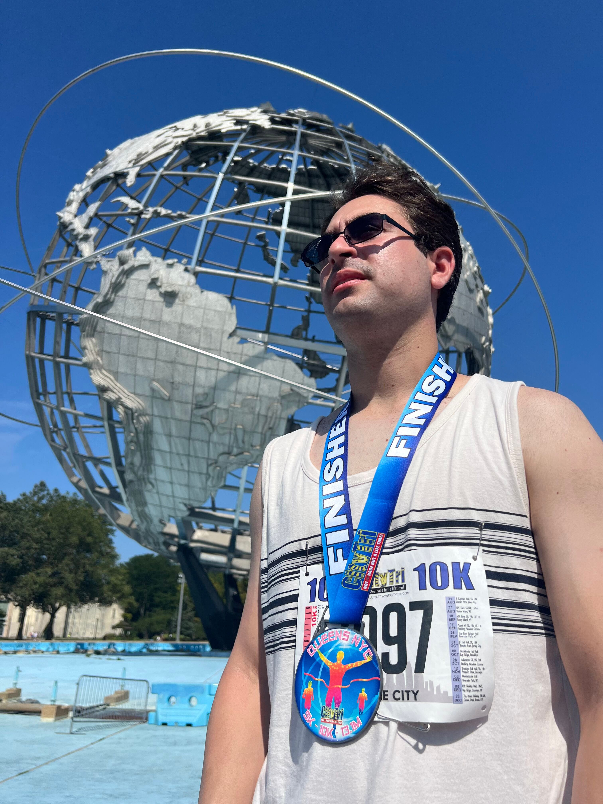

|
 |
Hello! My name is Nicholas Farkash. I am an undergraduate student at CUNY Queens College. The purpose of this website to serve as both a portfolio for professional purposes and a personal database of my computer science career. |
|
My computer science career began in the middle of 2018 when I entered the Science Research Program ran by my high school. Having an interest in video game development, I decided to make it my topic of study. From there, I spent a lot of time reading research articles on video games and their impact on society, learning about the process of video game development, and creating two video games to present at the end of the year. The COVID pandemic of 2020 provided me with a lot of time to think about what path I wanted to take in life. I was fortunate to have been accepted to my dream college, SUNY Stony Brook University, but I wasn't sure whether I wanted to pursue a degree in computer science or physics. I ultimately decided on physics, but after two years I realized that my true desire was to be a programmer. Due to Stony Brook's high demand of incoming CS students, the university was unable to accept me into the program. As such, I would have to transfer to another institution if I wished to study computer science. I found Queens College to have a fine program with many other appealing attributes. I transferred there for the Fall 2022 semester, and I couldn't be happier with where I am. Outside of programming, my biggest passion is baseball. I am a huge New York Mets fan, and I take immense pride in being able to say that I work for my favorite sports team as a member of their Promotions team. My dream is to work my way up, become a member of the team's front office, and apply my knowledge of computer science in a way to help the Mets win a World Series. My love for baseball can be found in some of my personal projects, such as Baseball Simulator and Baseball Clicker. |